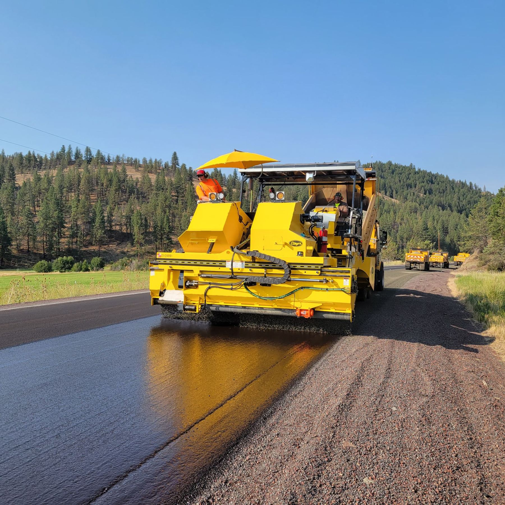

01
Road project management
Delivery of road upgrades, pavement, intersections and overtaking lanes inside an operating corridor. Sequencing, traffic interfaces and TMR specification compliance sit with the engineering, not beside it.
